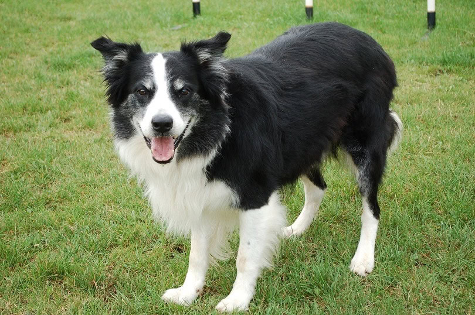
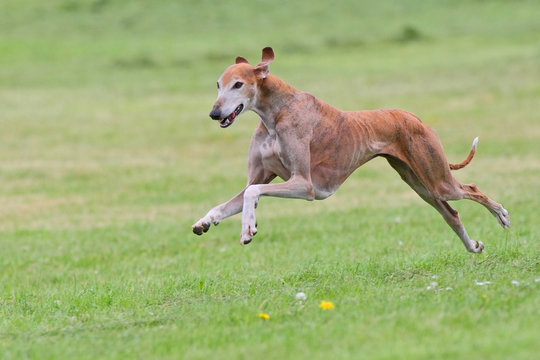
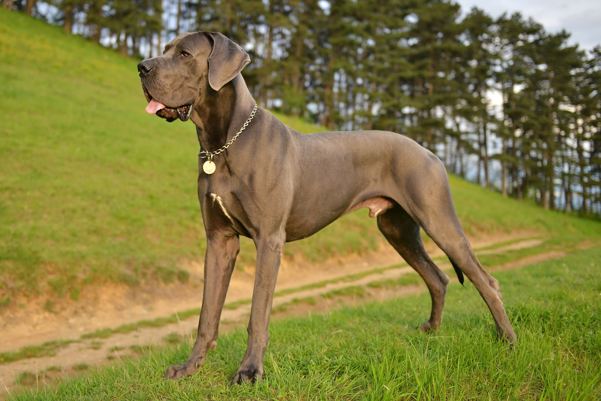
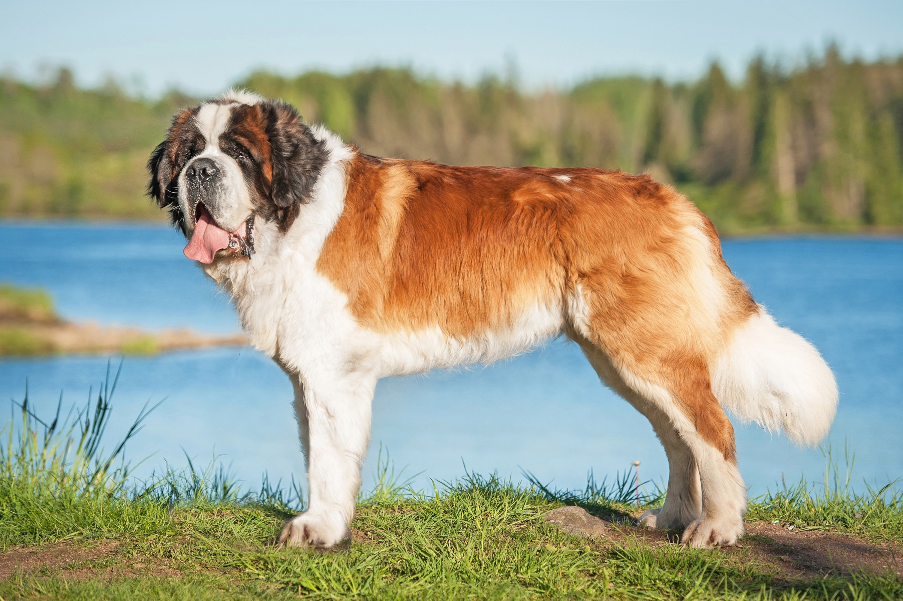
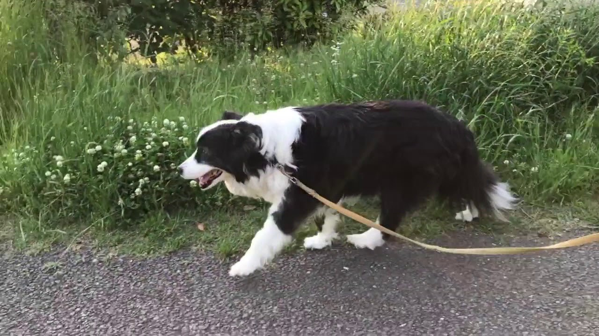
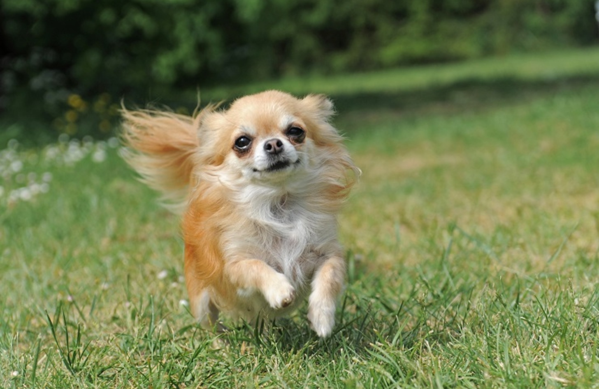
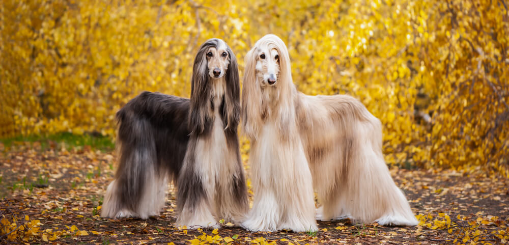

👑NO.1！様々な特技を持つワンちゃんたち🥇
犬には「世界一」がたくさんあります。 このページでは、さまざまな分野で活躍するわんこたちを紹介します！
📖目次
🧠 世界一賢い犬

ボーダーコリーは「世界一賢い犬」と言われています。 命令を数回聞くだけで覚えることができ、高い集中力と判断力を持っています。 牧羊犬として長年活躍してきたことから、人の動きを読み取りながら行動する能力も非常に優れています。
フリスビーやアジリティ競技でも大活躍しており、世界中で人気の高い犬種です。 遊ぶことも大好きなので、頭脳だけでなく運動能力もトップクラスです。
運動や遊びが足りないと退屈してしまうため、おもちゃを自分で動かしたり、いたずらをしたりして暇をつぶすこともあります。 頭を使う遊びが大好きな、勉強熱心な犬です。
🏃 世界一速い犬

グレーハウンドは最高時速約70kmにも達する、世界最速の犬です。 細長い体と長い脚を活かして一気に加速する姿は、まるで陸上選手のようです。
レース犬として有名ですが、実は普段はとても穏やかでのんびり屋な性格です。 家ではソファで眠ることが好きというギャップも人気の理由です。
短距離を走るのは得意ですが、ずっと走り続けることはあまり得意ではありません。 全力で走ったあとは、ゆっくり休む時間を大切にしています。
📏 世界一大きい犬

グレートデーンは世界最大級の犬種です。 オスは体高80cm以上・体重54kg前後、メスは体高72cm以上・体重46kg前後が平均です。 後ろ足で立つと人間の大人より高くなることもあり、その迫力に驚く人も少なくありません。
しかし見た目とは違い、とても穏やかで人懐っこい性格です。 体は大きくても飼い主に甘えることが大好きで、そのギャップも人気の理由の一つです。
世界一背が高い犬としてギネス世界記録に登録された犬の中にも、グレートデーンが何度も登場しています。
🍖 世界一たくさん食べる犬

セント・バーナードは超大型犬のため、一日に食べるご飯の量もトップクラスです。 成犬では体重が80kgを超えることもあり、毎日たくさんの食事が必要になります。
雪山で遭難者を救助してきた歴史があり、力強い体と優しい性格から多くの人に愛されています。 落ち着いていて我慢強く、子どもとも仲良く過ごせる犬種としても知られています。
寒い地域で暮らしてきたため寒さには強いですが、日本の暑い夏は苦手です。 暑さ対策は欠かせません。
🚶🐕 世界一お散歩が大好きな犬

ボーダーコリーは非常に運動量が多く、世界でもトップクラスのお散歩が必要な犬種です。 毎日1〜2時間以上の運動に加え、頭を使う遊びも必要とされています。
牧羊犬として何時間も羊を追ってきた歴史があるため、運動不足になるとストレスがたまりやすい犬種です。 一緒にスポーツを楽しみたい人にはぴったりのパートナーです。
🐾 世界一小さい犬

チワワは世界最小の犬種として知られています。体重は1〜3kgほどしかなく、大人になっても片手で抱き上げられるほど小柄です。丸い大きな目とぴんと立った耳が特徴で、その愛らしい見た目から世界中で人気があります。
小さな体ですが、とても勇敢で好奇心旺盛な性格です。 自分より何倍も大きな犬に立ち向かうこともあり、「小さな勇者」と呼ばれることもあります。 体は小さくても存在感は抜群です。
🧴 世界一毛が長い犬

アフガン・ハウンドは、美しい長い毛が特徴の犬種です。シルクのようになめらかな毛は地面につきそうなほど長く、歩く姿はまるでモデルのような優雅さがあります。その美しさから「犬界の貴族」と呼ばれることもあります。
もともとは山岳地帯で狩猟犬として活躍していたため、見た目だけではなく高い運動能力も持っています。風になびく長い毛と気品あふれる姿は、多くの人を魅了する世界屈指の美しい犬種です。
長い毛を美しく保つためには毎日のブラッシングが欠かせません。 その手間も含めて、多くの人を魅了する特別な犬種です。
犬には、犬種に限らずそれぞれ得意なことや個性があります。✨🐕✨
🌍世界一🥇という記録だけでなく、一匹一匹が持つ個性豊かな魅力も犬の素敵なところです。🫳🐶💖